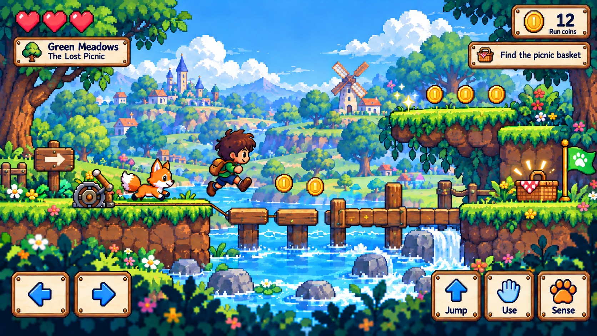
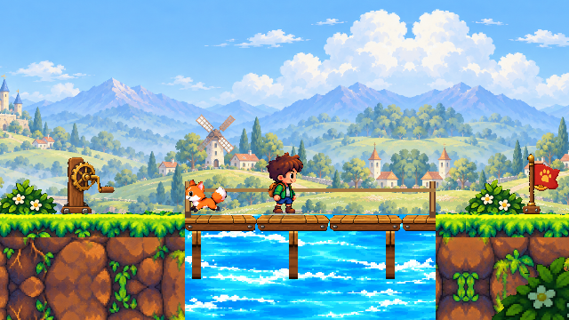
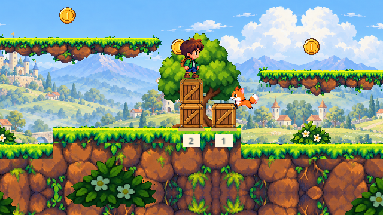
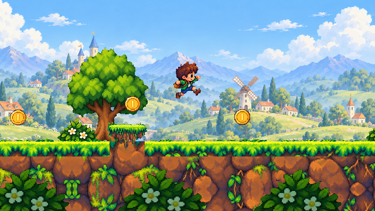
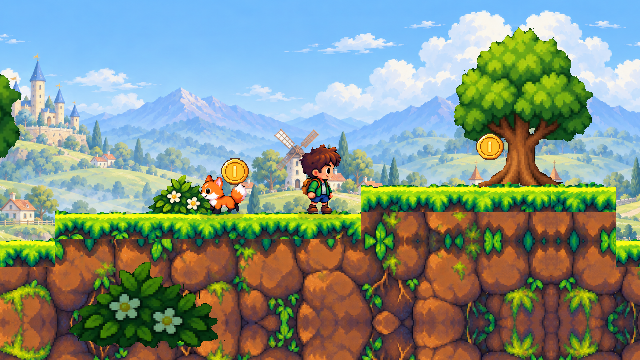
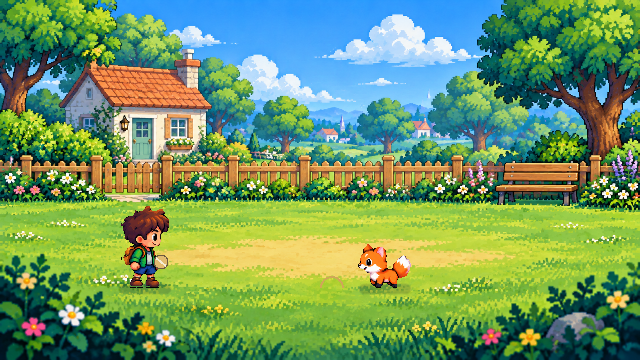
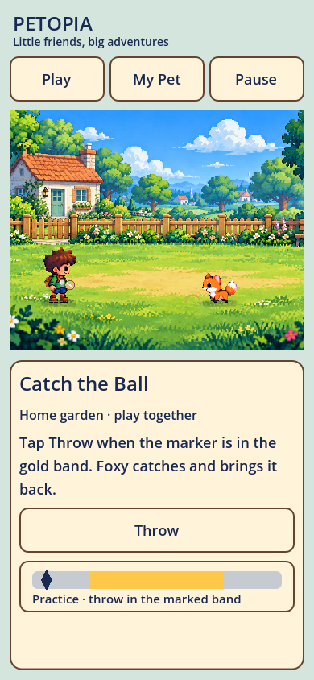

Rejected · visual quality gate failed
The user rejected this revision. Actor detail, terrain silhouettes, water, bridge contact and scene depth fall below the approved quality reference. The garden setting is relatively better but is not approved. These images are retained as failed examples. The concept defines style and quality, not an exact level layout to copy.
Approved V02 concept


Rejected v2 · wooden crossing


Rejected v2 areas
Crates and rounded ledges

Jump and character scale

Continuous bank joins

Runtime walking sample

Dedicated home garden


Why this revision failed
Rendering and asset-construction audit. The reference sets the quality bar; its exact layout does not need to be copied.
Production inventory
Character views, animation clips, scene kits, UI/logo and remaining work · Generation sources and prompts · Asset register · Verification scope
Tests prove mechanics and specific regressions. They do not establish that the visual direction has been accepted. The approved concepts remain the target throughout this review.